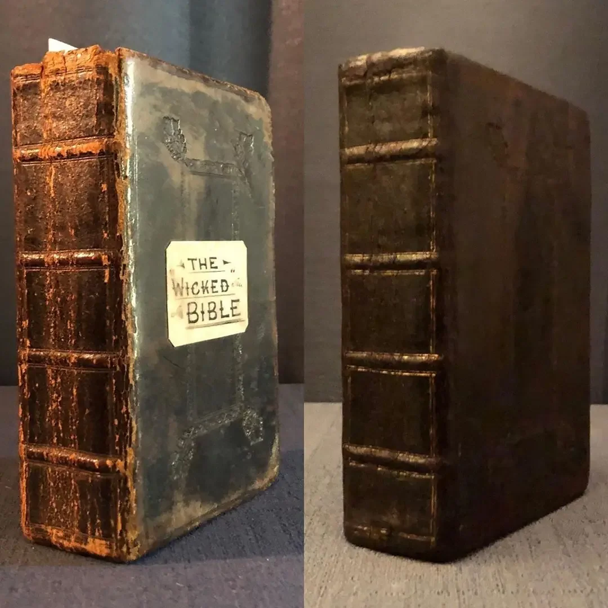
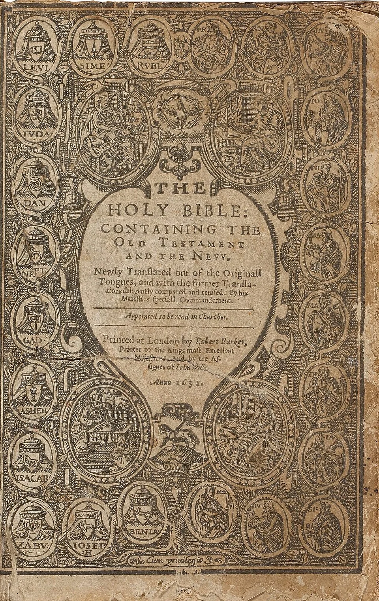

아직 펼치지 않은 카드모두의 말로 찍은 성경 · 7사악한 성경1631년에 찍은 성경에서 단 한 낱말이 빠졌어요. 그 바람에 십계명 하나가 정반대 뜻이 되었어요. 어떤 낱말이었을까요?한 낱말을 빠뜨려서 큰일 난 성경이 있대!
1631년런던 · 왕의 인쇄인 로버트 바커와 마틴 루카스
사악한 성경
1631년 런던에서 찍은 성경의 출애굽기(성경의 둘째 책) 20장 14절에서 not 세 글자가 빠졌어요. 위아래 줄에는 다 있는 낱말이에요. 법원은 책을 거둬 고치게 했고, 빠진 낱말은 주로 손으로 써 넣었어요. 그 not을 한 획씩 써 넣어 봐요.
성경에서 글자 세 개가 빠져서 큰일이 났대. 빠진 글자를 같이 써 넣어 볼까?
검수 전 시안이에요(기준서 2판). 책과 벌금, 고친 방법은 대학 도서관 목록과 성경 박물관의 연구자 인터뷰, 문구상 조합의 글을 따랐고, 서로 다른 곳은 ‘기록마다 다른 점’에 적었어요. not 글씨본은 이 안내서가 그렸어요. 상상은 ‘눈 감고 상상해 보기’에만 썼어요.
시안 확인용카드 단계 미리 보기
1
왕의 인쇄인이 찍은 책
1631년 런던에서 다시 찍은 킹 제임스 성경(1611년에 처음 펴낸 영어 성경)의 표제지(책 맨 앞 제목 쪽)예요. 아래쪽에는 왕의 인쇄인 로버트 바커, 그리고 존 빌의 권리를 이어받은 이들이 찍었다고 적혀 있어요.
가운데 글은 1611년 첫 판의 표제지와 거의 같아요. “원어에서 새로 옮기고, 앞선 번역들과 꼼꼼히 견주어 고쳤다.” 원어는 히브리어와 그리스어예요. 테두리 한쪽에는 이스라엘 지파(야곱의 열두 아들의 집안)의 이름을 적은 방패들이, 다른 쪽에는 사람 모습을 넣은 둥근 틀들이 줄지어 있어요.

로버트 바커는 1611년 첫 판을 찍은 바로 그 인쇄인이에요. 그는 왕의 인쇄인(왕이 정한 공식 인쇄인)으로 킹 제임스 성경을 찍는 독점권을 가졌고, 그 권리를 어긴 사람들을 고등 종교 법원(High Commission · 인쇄까지 다룬 교회 법원)에 여러 번 고발했어요.
이번에는 동료 마틴 루카스와 함께 찍었어요. 표제지에는 루카스의 이름이 없어요. 이 책을 연구한 크리스 존스는 이때 천 부쯤 찍었을 것으로 봐요.
400년 전에 찍은 성경이야. 이 성경에는 아주 유명한 실수가 있대.
물어보기테두리 왼쪽 방패에 짧은 이름들이 있어. DAN을 찾아볼까?
2
빠진 세 글자
출애굽기 20장의 십계명(성경이 전하는 열 가지 계명)이 적힌 쪽이에요. 13절은 사람을 죽이지 말라는 계명, 15절은 도둑질하지 말라는 계명이에요. 두 줄 모두 “Thou shalt not(너는 ~하지 말라)”으로 시작해요.
그 사이 14절은 “Thou shalt commit adultery(너는 간음하라)”라고 찍혔어요. 계명이 여러 절에 걸쳐 있어서, 14절이 일곱째 계명 ‘간음하지 말라’(부부의 약속을 깨지 말라는 계명)예요. 여기서 not 세 글자가 빠져, 뜻이 정반대가 되었어요.
1631년 초, 이 잘못을 알리는 소식이 잇따랐고, 일은 고등 종교 법원으로 갔어요. 법원은 책을 거둬 바커에게 돌려보내, 고쳐서 팔게 했어요. 아래 글씨본은 이 안내서가 그렸어요. 쓰는 차례는 옛 글씨가 아니라, 오늘 학교에서 배우는 손글씨 차례예요.

빨간 점에서 시작해, 흐린 선을 손가락이나 마우스로 따라 그어 보세요. 다섯 획이면 not이에요.
빨간 점에서 시작해 흐린 선을 따라 그어 보세요. 다 그으면 먹색으로 바뀌어요.
“Thou shalt not commit adultery.” 빠졌던 세 글자가 제자리로 돌아왔어요.
같은 책 신명기 5장 24절에는 하나님의 ‘위대함(greatnesse)’이 ‘great asse(큰 나귀)’로 찍힌 곳도 있었어요.
바커는 자기 잘못이 아니라 일꾼의 잘못이라며 맞섰고, 재판은 한 해 가까이 끌었어요. 벌금은 모두 300파운드로, 바커의 몫이 200파운드쯤, 루카스의 몫이 100파운드였어요.
“하지 말라”에서 not이 빠져서 뜻이 거꾸로 됐대. 같이 써 넣어 볼까?
물어보기사진 속 다른 줄에서 not을 찾아볼까? 몇 번 나와?
눈 감고 상상해 보기
되돌아온 성경이 탁자 위에 쌓여 있어요. 한 사람이 책을 펼쳐 출애굽기 20장을 찾아요. 펜 끝에 잉크를 찍어, 14절 Thou shalt와 commit 사이에 작게 not을 적어 넣어요. 잉크가 마르기를 기다렸다가 책을 덮고, 다음 책을 펼쳐요.
눈을 감아 봐. 책이 산처럼 쌓여 있어. 펜으로 작게 not, 다음 책도 not, 또 not.
나의 자리
세 글자가 빠졌을 뿐인데, 사람들은 왜 그토록 무겁게 여겼을까요?
글자 세 개가 빠졌을 뿐인데, 왜 큰일이 났을까?
마음에 닿는 한 줄을 고르거나 직접 써 보세요. 한 줄을 남기면 이 자리의 도장이 찍혀요. 이 기기에만 저장돼요.
더 깊이
이야기를 보다 궁금해질 만한 것들이에요. 답을 읽거나 짧은 영화로 보세요.
정말 실수였어요? 누가 일부러 뺀 건 아니에요?
왕의 성경에서 이런 사고가 났는데, ‘고쳐서 팔아라’가 끝이었어요?
뒷이야기
아직 펼치지 않은 이야기예요. 누르면 이야기가 펼쳐지고 색이 돌아와요. 더 알고 싶으면 근거를 따라가 보세요.
다 펼치면, 다음에 오실 때 새 이야기가 찾아와요.
오늘의 뒷이야기는 여기까지예요. 다음에 오시면 새 이야기가 기다리고 있어요.
펼친 뒷이야기 · 누르면 다시 볼 수 있어요
더 찾아보기
기록마다 다른 점
남은 책은 몇 권? 앞면 카드는 25부쯤이라고 해요. 문구상 조합의 글은 14부라고 적었고, 크리스 존스는 기관에 17부, 개인에게 4~8부가 있다고 봐요. 존스의 연구 모임 누리집은 그 뒤 적어도 25부, 그중 기관에 18부가 있다고 적어요.
모두 없앴을까? 문구상 조합의 글은 거의 다 거둬 없앴다고 적어요. 존스는 법원이 책을 거둬 고쳐서 팔게 했고, 고치지 않은 채 남은 책도 많다고 말해요. 다 없어졌다고 한 스티븐스의 말도 맞지 않다고 봐요.
어느 법원에서, 얼마를? 1839년 팀퍼리의 『인쇄 사전』은 별실 법원(Star Chamber)에서 3,000파운드를 물렸다고 적었어요. 존스와 애니카 스테드먼은 고등 종교 법원에서 300파운드였다고 하고, 별실 법원 이야기는 잘못 알려진 것이라고 봐요.
바커는 무엇이라고 했을까? 존스는 바커가 재판을 열 일조차 아니라며 일꾼 탓을 했다고 말해요. 스테드먼은 인쇄인들이 죄를 인정하면서, 일부러 한 일은 아니라고 했다고 적어요.
인쇄 허가를 잃었을까? 앞면 카드와 휴스턴 크리스천 대학의 기사(2024)는 허가를 잃었다고 적어요. 스테드먼은 왕이 인쇄인들을 문 닫게 할 생각이 없었다고 봐요.
벌금은 바커를 무너뜨렸을까? 문구상 조합의 글은 벌금이 바커를 무너뜨렸고, 그가 남은 삶을 빚진 사람을 가두는 감옥에서 보냈다고 적어요. 존스는 바커가 그 벌금을 끝내 내지 않았다고 말해요.
더 찾아보기
이 책을 연구한 사람의 이야기와 바커의 삶을 더 읽어 볼 수 있어요.
빠진 not 써 넣기 금박
빠진 not을 다섯 획 모두 써 넣으면 카드에 금박이 입혀져요.
빠진 not을 다섯 획으로 써 넣기
아이와 함께 채색
아이와 함께 ‘영화처럼 보기’를 끝까지 보면 카드가 채색돼요.
아이와 함께 ‘영화처럼 보기’를 끝까지 보기
근거 보기 (22)
- 크리스 존스, 「The Wicked Bible」(캔터베리 대학 사악한 성경 프로젝트, 재벌에 씀) — 1855년 런던 고고학회 강연에서 미국인 고서 상인 헨리 스티븐스가 ‘Wicked’ 성경이라 부름 · 그 책은 네덜란드에서 나옴 · 일부러 망쳤다는 생각은 1950년대 말에 처음 나왔고 증거가 거의 없음, 바커도 경쟁자를 탓하지 않고 ‘일꾼들의 잘못’ · 별실 법원 이야기는 잘못 · 적어도 25부, 기관 18부
- 애니카 스테드먼, 「The Court of High Commission」(캔터베리 대학 사악한 성경 프로젝트) — 1631년 초 소식이 잇따름 · 바커와 루카스 · 모독하고 나라를 어지럽히는 책을 찍어 판 ‘중대한 죄’ · 죄를 인정하며 일부러 한 일이 아니라고 함 · 300파운드, 바커 몫은 그가 말한 한 해 수입의 7% · 벌금도 면해 줌 · 왕은 인쇄인들을 문 닫게 할 생각이 없었음, 유럽과의 경쟁 · 이 무렵 인쇄와 결혼, 교회의 가르침까지 다룸
- 사이먼 딕슨(2015), 레스터 대학 도서관 특별 장서 블로그 — 고든 캠벨은 바커의 경쟁자 보넘 노턴이 망신을 주려고 일부러 그랬다고 봄
- 문구상 조합(Stationers’ Company) 루스 프렌도의 글(재벌에 더 씀) — great-asse 때문에 일부러 망쳤다고 의심하는 역사가들 · 1589년 바커 부자가 평생 왕의 인쇄인 특권(영어 성경을 혼자 찍을 권리)을 받음
- 성경 박물관 매거진(재벌에 더 씀) — 크리스 존스는 캔터베리 대학 중세사 교수 · 19세기 초에는 지어낸 이야기일지 모른다고 여김 · 스티븐스의 첫 책은 뉴욕 공공도서관 · 바커는 재판을 열 일조차 아니라며 일꾼 탓
- 브리태니커: Court of High Commission — 왕이 세운 잉글랜드의 교회 법원 · 벌은 벌금이나 감옥 · 1641년에 없어짐
- 브리태니커: biblical literature — The King James and subsequent versions — 번역자들이 바탕으로 쓴 신약의 그리스어 본문, 히브리어가 준 영향
- 개역개정 창세기 49장 — 1~2절 야곱의 아들들 · 28절 이스라엘의 열두 지파
- 개역개정 출애굽기 20장 — 2~17절 십계명, 14절 ‘간음하지 말라’ · 신명기 5장 6~21절에 다시 나옴
- C. H. 팀퍼리, 『A Dictionary of Printers and Printing』(1839) 484쪽(위키문헌) — 1632년 성경의 not, 별실 법원, 3,000파운드, 그리스어 활자를 사는 데 쓰라는 왕의 편지
- 휴스턴 크리스천 대학 뉴스 「A Wicked Discovery」(2024) — 별실 법원, 300파운드, 인쇄 허가를 잃음, 약 11부 · 던햄 성경 박물관은 2008년에 사들임
- 프린스턴 대학 도서관 목록(STC 2296) — 1631년 판 표제(newly translated out of the originall tongues, and with the former translations diligently compared and reuised, by His Maiesties speciall commandement ; appointed to be read in churches), 로버트 바커와 존 빌의 권리를 이은 이들, ‘Wicked Bible’ · 출애굽기 20장 14절 “Thou shalt commit adultery”, 외경 포함, 장식 테두리
- 펜실베이니아 대학 도서관 목록 — Printed at London : By Robert Barker ..., and by the assignes of Iohn Bill, 1631 · ‘Wicked Bible’
- 성경 박물관 매거진 「From the Podcast: Dr. Chris Jones and the “Wicked” Bible」 — 바커의 독점권과 고등 종교 법원 고발, 누군가 알아챔, 벌금 바커 200파운드쯤·루카스 100파운드·모두 300파운드·끝내 내지 않음, 일꾼 탓, 한 해 가까이, 왕의 그리스어 인쇄 조건, 책을 거둬 고쳐 팔게 함·고치지 않은 책도 많음, 주로 손으로 고침·붙인 종이의 풀 자국·great ass는 먹으로 덮음, 천 부쯤, 기관 17부와 개인 4~8부, 헨리 스티븐스(뉴욕 공공도서관·이름 붙임), 살핀 기관들, 성경 박물관 두 권
- 문구상 조합(Stationers’ Company) 루스 프렌도의 글 — 로버트 바커: 1589년 조합에 들어옴, 1611년 킹 제임스 성경, 1631년 판에서 십계명의 not이 빠짐, 벌금이 그를 무너뜨림, 빚진 사람의 감옥, 대부분 거둬 없앰, 14부가 남음
- 폴저 셰익스피어 도서관 STC 2216 — 1611년 첫 판 표제(같은 구절)와 로버트 바커
- 리딩 유니버스(WETA) 「How to Teach Letter Formation」 — n: down, hump · o: around, close · t: down, cross
- 오크 국립 아카데미 「Formation of m, n and r」 — m·n·r은 down, up and over
- 위키미디어 공용: 1631년 판 표제지 사진(퍼블릭 도메인 · 소더비 2016) 정보
- 위키미디어 공용: 1631년 판 출애굽기 20장 12~16절 사진(퍼블릭 도메인 · 소더비 2016) 정보
- 위키미디어 공용: 1631년 판 출애굽기 20장 쪽 사진(Narrington77, 2020 · CC BY-SA 4.0) 정보
- 위키백과 「Wicked Bible」(길잡이로만)
그림·사진·소리 출처
- 자료: 1631년 판 킹 제임스 성경 · 퍼블릭 도메인 · 위키미디어 공용
- 자료: 1631년 판 킹 제임스 성경 · 퍼블릭 도메인 · 위키미디어 공용
- 자료: 1631년 판 킹 제임스 성경 · 퍼블릭 도메인 · 위키미디어 공용
- 사진: Narrington77 · CC BY-SA 4.0 · 위키미디어 공용
- 자료: 1631년 판 킹 제임스 성경 · 퍼블릭 도메인 · 위키미디어 공용
- 자료: 1631년 판 킹 제임스 성경 · 퍼블릭 도메인 · 위키미디어 공용
- 자료: 1631년 판 킹 제임스 성경 · 퍼블릭 도메인 · 위키미디어 공용
- 자료: 1631년 판 킹 제임스 성경 · 퍼블릭 도메인 · 위키미디어 공용
- 사진: Narrington77 · CC BY-SA 4.0 · 위키미디어 공용
- 사진: Narrington77 · CC BY-SA 4.0 · 위키미디어 공용
‘처음 만나는 기독교 문화’의 깊은 카드예요. 카드 단계와 남긴 글은 이 기기에만 저장돼요.